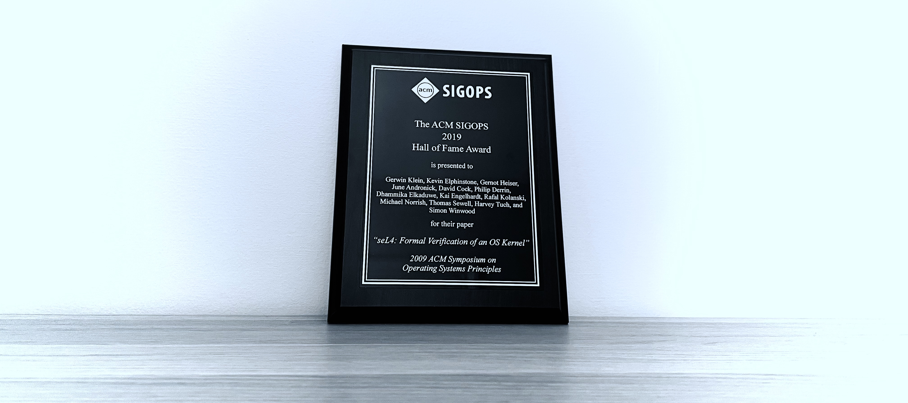

The formal verification of seL4 was a breakthrough in both the Systems and the Formal Methods research disciplines. Applying the rigor of a mathematical computer-checked proof to a high-performance, deployable was a world first. It has since been followed by increasingly stronger assurance, as well as demonstrations of prevention of cyber-attacks on systems in operation. This has been recognised by international acclaimed awards.
 ' %}DARPA Game changer award for HACMS
Each year, DARPA, the US Defense Advanced Research Projects Agency, selects the Game Changer program that was the most impactful in the preceding 10 years. In 2023, DARPA's Game Changer award recognised the High-Assurance Cyber Military Systems program (HACMS), which has been instrumental in demonstrating how seL4 can be integrated into real-world products, such as unmanned air and ground vehicles, to provide unprecedented protection against cyber attacks.
ACM systems Award
The ACM Systems Award, presented annually by the Association for Computing Machinery (ACM) since 1983, honors individuals or organisations "for developing a software system that has had a lasting influence, reflected in contributions to concepts, in commercial acceptance, or both". In 2022, seL4 received the ACM Systems Award, recognised as a technology that has "fundamentally changed the research community’s perception of what formal methods can accomplish", also giving "to give rise to a new discipline of proof engineering".
ACM SIGOPS Hall of Fame Award
The ACM SIGOPS Hall of Fame Award recognises the most influential Operating Systems papers that were published at least ten years in the past. In 2019, this prestigious honor went to the seL4 project, acknowledging that the work "has become the basis for a large amount of subsequent work in provably correct systems".
MIT Technology Review's TR10 award
MIT Technology Review, founded in 1899 by the Massachusetts Institute of Technology, is a renowned independent media company that each year selects 10 transformative technologies expected to have the biggest impact on the world in the years to come. In 2011, MIT Technology Review honored seL4 with its prestigious TR10 award, recognizing it as a "computing and mathematical tour de force" that will have "a major impact on the reliability of the entire system", by "making critical software safer".
SOSP Best Paper Award
The Symposium on Operating Systems Principles (SOSP), organized by the Association for Computing Machinery (ACM), is one of the most prestigious academic conferences on operating systems. In 2009, seL4's cornerstone paper on the first formal proof of functional correctness of a high-performance microkernel received the best paper award.